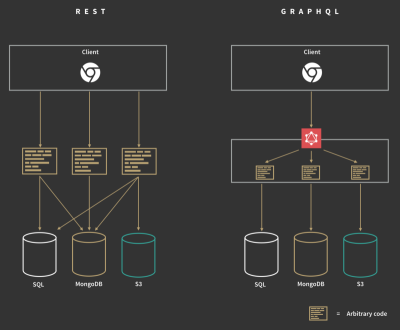
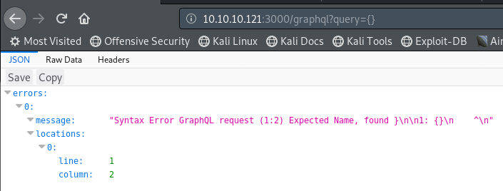

#JSON - GraphQL
https://blog.doyensec.com/2018/05/17/graphql-security-overview.htmlhttps://github.com/doyensec/graph-ql/https://medium.com/@localh0t/discovering-graphql-endpoints-and-sqli-vulnerabilities-5d39f26cea2e## What is GraphQL?
GraphQL is an alternative to REST API.
It's a data query language developed by Facebook and publicly released in 2015.
Nowadays, GraphQL by a lots of big tech giants - GitHub, Pinterest, Twitter, HackerOne, and more.
In REST APIs, the client interacts with programmer written code to retrieve JSON data.
In GraphQL, the client interacts with GraphQL, and then GraphQL interacts with the programmer written code to retrieve JSON data.
(Image credits:
http://bearcatjs.org/graphql-versus-rest-api/)
This means that requests for data can be simpler, and you can retrieve multiple pieces of data from multiple sources with 1 request (unlike REST which would take multiple).
## Why is GraphQL vulnerable?
GraphQL can be a lot of work to set up because GraphQL won't interact with your databases automatically.
The backend programmer has to code all of the available GraphQL queries they want.
Since developers are writing all this code and are in charge of implementing access control, GraphQL applications are prone to classical web application vulnerabilities like Broken Access Controls, Insecure Direct Object References, Cross Site Scripting (XSS), Classic Injection Bugs, and SQL Injection vulnerabilities.
More info can be found here:
https://blog.doyensec.com/2018/05/17/graphql-security-overview.html## Identify GraphQL Backend
### URLs
If you find any of these URLs, you've probably found GraphQL.
/graphql
/graphql/console/
/graphql.php
/graphql.php?debug=1 (debugging mode with additional error reporting, may be left open by developers)
/graphiql
/graphiql.php### Error Message
You can check for a GraphQL backend by sending an intentionally wrong query and reading the error message:
http://example.com/graphql?query={}## Retrieve Data from GraphQL
Once you've found the GraphQL endpoint, you need to find what data you can get.
The GraphQL
IntrospectionQuery is how this is normally done.
### doyensec's Script
Rather than using
IntrospectionQuery yourself, doyensec has a useful script.
https://github.com/doyensec/graph-ql/python GraphQL_Introspection.py -t http://10.10.10.121:3000/graphqlCheck the ‘query’ folder from the results, should see something like this:
{"query":"query{user(){username password }}"}Use the query in the URL like so to retrieve data:
http://10.10.10.121:3000/graphql?query={user{username password}}